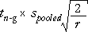
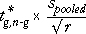
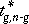

Controlling for multiple pairwise comparisons
In experiments with a factor that has several levels, there are many possible pairwise comparisons of levels. The Bonferroni correction could be used to increase the t-value that is used for each comparison, but the differences between the level means are highly correlated so this approach is too conservative.
Statistical theory provides a better adjustment to fix the overall probability that no pairs of means will be found to differ if the factor has no effect on the response. For an experiment in which there are r replicates for each of the g factor levels (and hence n = rg experimental units), we should replace the pairwise maximum difference for significance,

with

where  is a constant that can be looked up in tables of the studentised range distribution or obtained from statistical software.
Explanation
The conventional two-sample interval is based on pairwise comparisons, but the studentised range interval fixes experiment-wise probabilities.
| This is the width of a 95% confidence interval for the difference between any two specific level means. It is therefore also the maximum difference for them to be considered significantly different at the 5% significance level. | |
| This is the width of a 95% confidence interval for the difference between the minimum and maximum of the g level means. There is therefore 95% probability that all level means will be closer to each other than this if the factor has no effect, and a 5% probability that at least one pair of level means will be further apart. |
Constants for multiple comparisons
The diagram below calculates the constant for multiple comparisons of all pairs of group means to give a 5% significance level for the multiple comparison.
The constant's value depends on both the number of groups and on the number of values per group and these can be adjusted using the sliders in the diagram.
Which group means are different?
An approach that is often used to assess which group means differ is therefore to first evaluate the interval,
Since this interval is based on the width of a 95% confidence interval for the difference between the minimum and maximum level means, we can conclude that there is no evidence of a real difference between levels whose means differ by less than this. There is moderate evidence that levels whose means differ by more are really different.
Using values of from tables at significance levels that are lower than 5% would increase the width of the interval; level means that were further apart would then give stronger evidence of a real difference between the underlying levels.
Antibiotic effectiveness
An experiment was conducted to find the percentages of five common antibiotics that bind to blood serum proteins. (The higher the percentage binding, the less effective the antibiotic.) The experiment was repeated four times using each antibiotic. An analysis of variance gives extremely strong evidence that the binding percentages for the antibiotics are not all equal.
Are there any groupings of similar antibiotics?
The diagram initially shows pairwise comparisons of the group means based on differences
The red band on the right has this length. Drag it up and down to see which treatment means are within this distance of each other.
However this is a poor way to compare 5 levels.
An experiment was conducted to find the percentages of five common antibiotics that bind to blood serum proteins. (The higher the percentage binding, the less effective the antibiotic.) The experiment was repeated four times using each antibiotic. An analysis of variance gives extremely strong evidence that the binding percentages for the antibiotics are not all equal. Now select Multiple comparisons from the pop-up menu to display differences based on
With this type of interval, the group means must be further apart for us to conclude that there is evidence of a difference. Dragging the red band, we can conclude that:
There is no evidence of differences between the mean binding percent of Penicillin, Tetracycline and Chloramphenicol, but there is evidence that Streptomycin and Erythromycin are different from the other group and from each other.